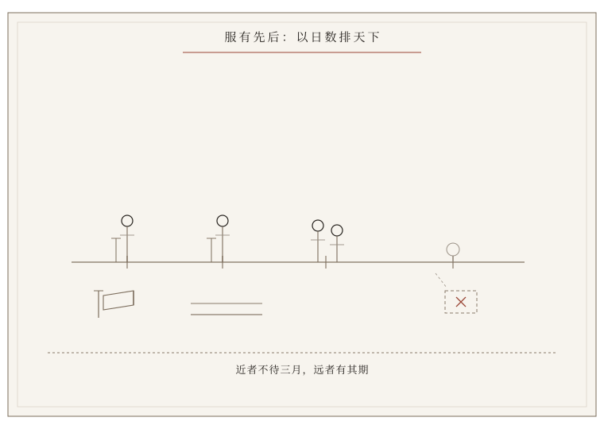

檀弓下 · 四·七十八 · 第 403 课
天子崩，三日，祝先服；五日，官长服；七日，国中男女服；三月，天下服。虞人致百祀之木，可以为棺椁者斩之。不至者，废其祀，刎其人。
说什么事：天子死，三日祝先服杖，五日官长服杖，七日国中男女成服，三月天下诸侯之大夫服。虞人送上百祀之木，可取为棺椁的便伐。有不到者，废其祀，杀其人。
落在哪一层：以「日数」为界。天下同丧，而服有先后；先后不是轻重，是远近。
为何编在此位：上节以「哭之地」辨礼，此节以「服之日」排天下。一篇之丧，至此始见其「编」法。
【经】天子崩，三日，祝先服。五日，官长服。七日，国中男女服。三月，天下服。虞人致百祀之木，可以为棺椁者斩之。不至者，废其祀，刎其人。
【注】祝佐含敛先病。／官长，大夫、士。／庶人。／诸侯之大夫。／虞人，掌山泽之官。百祀，畿内百县之祀也。以为棺椁，作棺椁也。斩，伐也。
【疏】此一节论天子崩，尊卑服杖及葬备椁材之事。「天子崩，三日，祝先服」者，祝，大祝商祝也。服，服杖也。是丧服之数，故呼杖为服。祝佐含敛先病，故先杖也。／「五日，官长服」者，大夫、士也，亦服杖也。病在祝后，故五日也。／「七日，国中男女服」者，谓畿内民及庶人在官者服，谓齐衰三月而除之。必待七日者，天子七日而殡，殡后嗣王成服，故民得成服也。／「三月，天下服」者，谓诸侯之大夫为王繐衰，既葬而除之也。近者亦不待三月，今据远者为言耳。／案《丧大记》云「君之丧三日，子大夫人杖；五日既殡，授大夫世妇杖」，又《丧服四制》云「三日授子杖，五日授大夫杖，七日授士杖」，则知今云三日五日，是服杖明矣，其七日及三月者，唯服而已，无杖。《四制》云「七日授士杖」，此云五日士杖者，士若有地、德深者则五日，若无地、德薄则七日。崔氏云：「此据朝廷之士，《四制》是邑宰之士也。」／「虞人致百祀之木」，谓王殡后事也。虞人者，主山泽之官也。百祀者，王畿内诸臣采地之祀也。既殡，旬而布材，故虞人斩百祀之木可以为周棺之椁者送之也。必取祀木者，贺玚云：「君者德著幽显，若存，则人神均其庆，没，则灵祗等其衰伤也。」
服 服杖。此节之「服」谓执丧杖，非谓衰裳。
祝 大祝、商祝，佐含敛者。
官长 大夫、士。
国中男女 畿内之民与庶人在官者。
天下 诸侯之大夫。
虞人 掌山泽之官。
百祀 王畿内诸臣采地之祀。
斩 伐。
不至者 该送木而不到者。
废其祀 废其所主之祀。
刎 割颈。
天子死，三日祝先服杖，五日官长服杖，七日国中男女成服，三月天下诸侯之大夫服。虞人送上百祀之木，凡可作棺椁的便伐取。有不到者，废其祀，杀其人。
此章前半为一张日表，后半为一道材令，末三字为一则罚则。
日表以远近排，材令以官职派，罚则以生死断。
三样合看，才见「天子之丧」不是一家之丧，是一个天下的工程。
第一层 「服」是杖 疏一句断定：「服，服杖也。是丧服之数，故呼杖为服。」
礼之用语，常以最显者代全体。 一杖在手，便知在服。
第二层 日数之序：先者最亲且最近 三日祝、五日官长、七日国中、三月天下。
疏云七日之故：「天子七日而殡，殡后嗣王成服，故民得成服也。」 民的日数，是由嗣王成服之日推出来的。
第三层 「近者亦不待三月」 疏云此据远者为言。
礼给远者一个期限，不是许其迟，是许其到。 天下之大，不能同刻举哀；礼以日数把「同时」换成了「同办」。
第四层 杖与不杖 疏辨：三日五日是服杖；七日与三月「唯服而已，无杖」。
同是成服，而杖不可假。 杖者，身之不能自持者也；礼只给到「真不能持」的那一层。
第五层 士之五日与七日 疏引《四制》「七日授士杖」，与本经「五日」不合，崔氏以「朝廷之士／邑宰之士」分释。
礼家于此不裁一说是非，只把两种士分开。 分寸不在数字，在「何人」。
第六层 取「祀木」 疏引贺玚：「君者德著幽显，若存，则人神均其庆；没，则灵祗等其衰伤。」
故取祀木为棺椁，不是夺神，是与神同哀。 一国之神，也要为这一人之死出力。
第七层 「废其祀，刎其人」 罚则极酷。
此一句见礼之另一面：非常之时，礼可以硬。 材不到，则祀废人死——不是征求，是征调；不是愿与不愿，是能与不能。
与今日何干 今之大事，多能排日程，少能派到「木」这一层；能派到木的，又常不敢定罚。
此章给一句：礼之能行，一半靠序，一半靠罚。
| 左 | 右 |
|---|---|
| 三日祝服 | 佐含敛者先 |
| 五日官长服 | 大夫、士 |
| 七日国中男女 | 民与庶人在官 |
| 三月天下服 | 诸侯之大夫 |
| 服 | 服杖，非衰裳 |
| 七日三月 | 唯服无杖 |
| 虞人致木 | 掌山泽者 |
| 取祀木 | 人神同哀 |
| 不至者废祀刎人 | 征调之罚 |
画一幅简略的时日序列，视点平视。画面中部横贯一条长线为时间轴，轴上等距画四个短竖刻度，刻度自语者向右依次变疏。每一刻度之上立一人形，第一人手中拄一根短杖，第二人亦拄杖而身形稍高，第三人并立两人（一男一女，皆无杖），第四人只画一个极小的圆圈，示其远。时间轴之下偏右画一柄斧与一段木料，木料一端截断。画面右下角画一个空着的方框，框上压一道短叉，示「不至」。不画文字。赭色只用在那柄斧的刃上。
